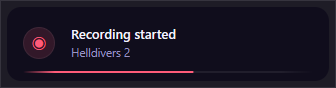
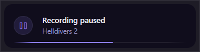
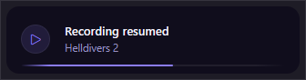
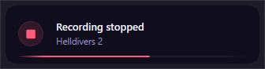
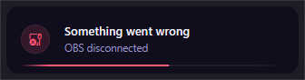
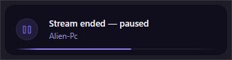
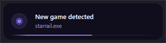

REDUNDANT — rejected recapture
Anthony rejected this set. The confirmed toast is tools/_toast_demo/ and design/toast-canonical/. Do not design from these pictures.
01 · Recording started · ember
02 · Recording paused · violet
03 · Recording resumed · violet
04 · Recording stopped · ember
05 · Something went wrong · ember
06 · Session paused
07 · New game detected · violet